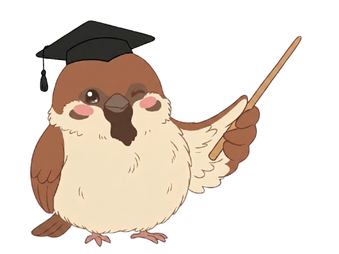
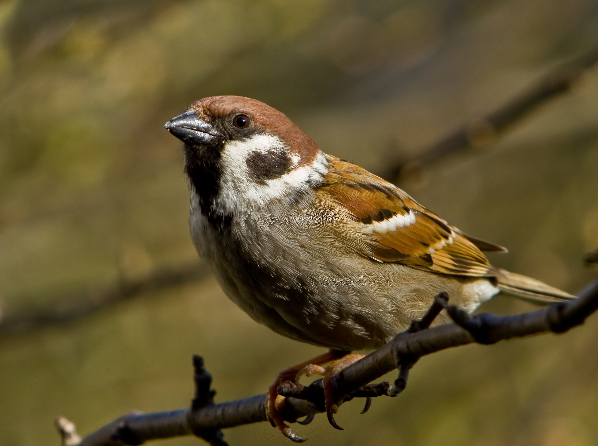
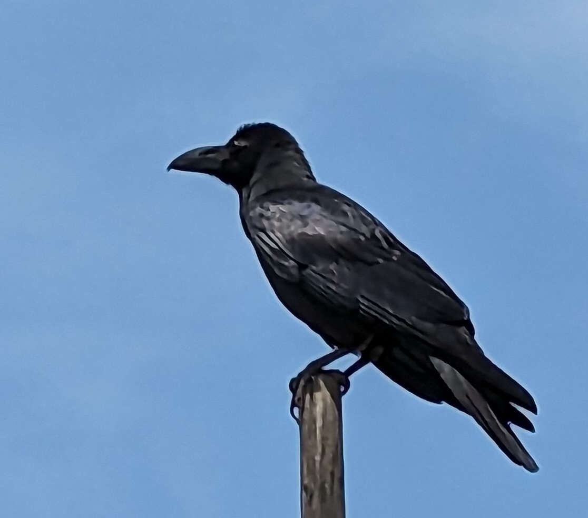
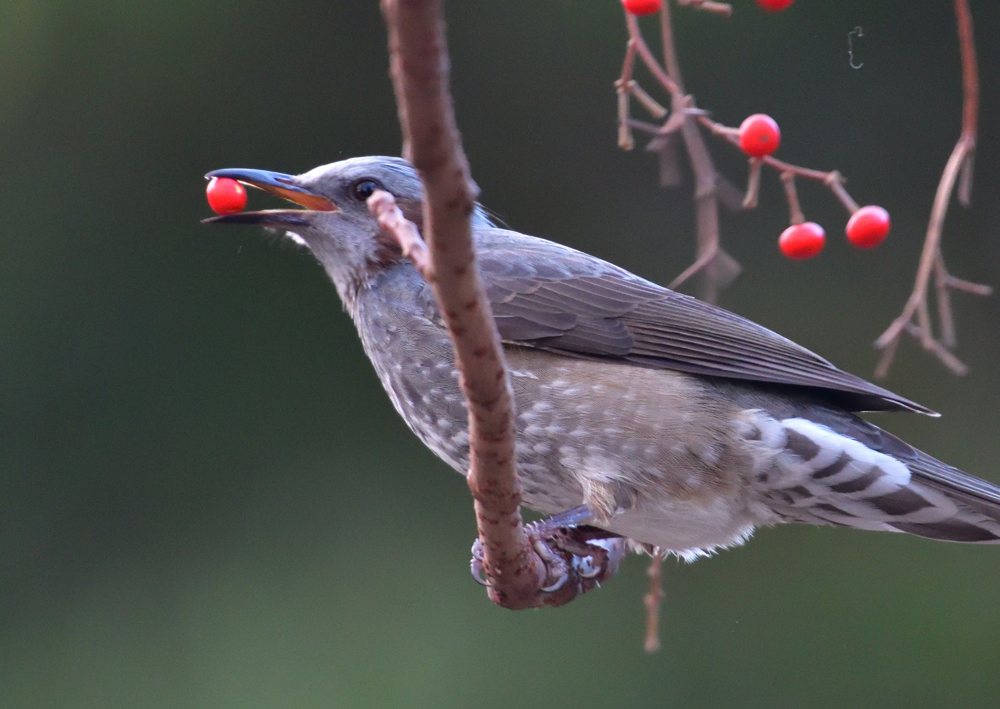
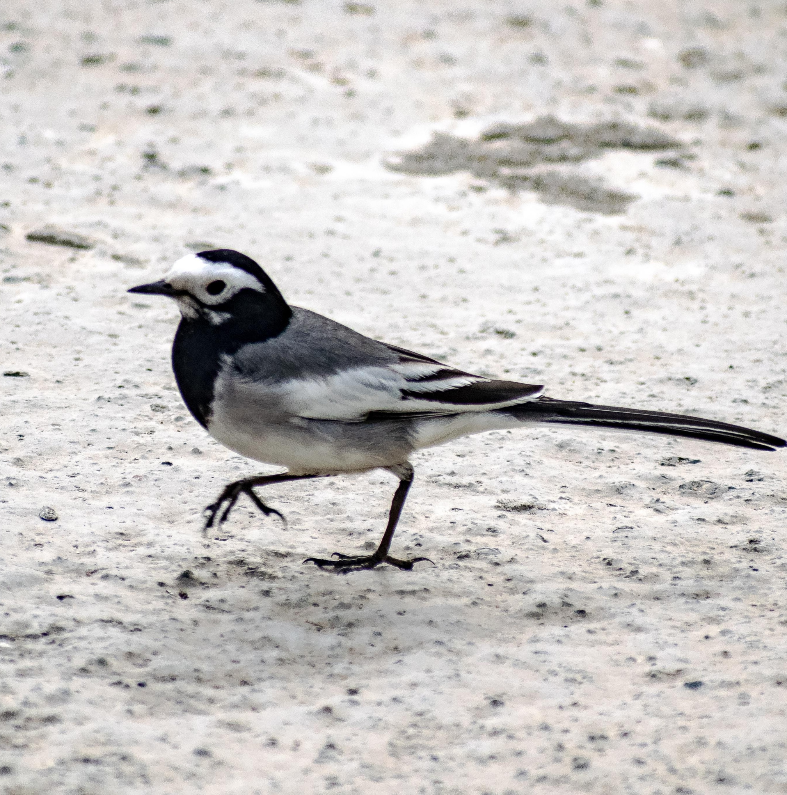
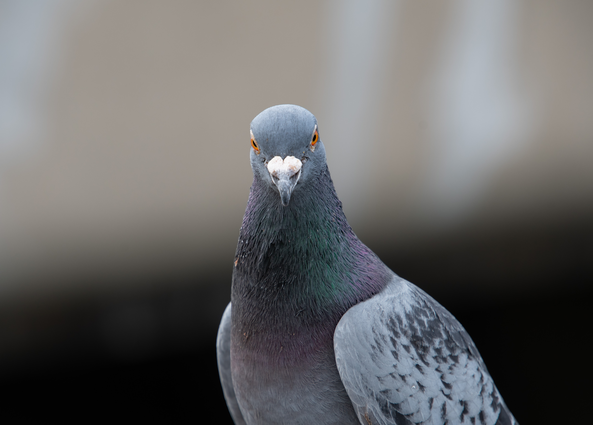
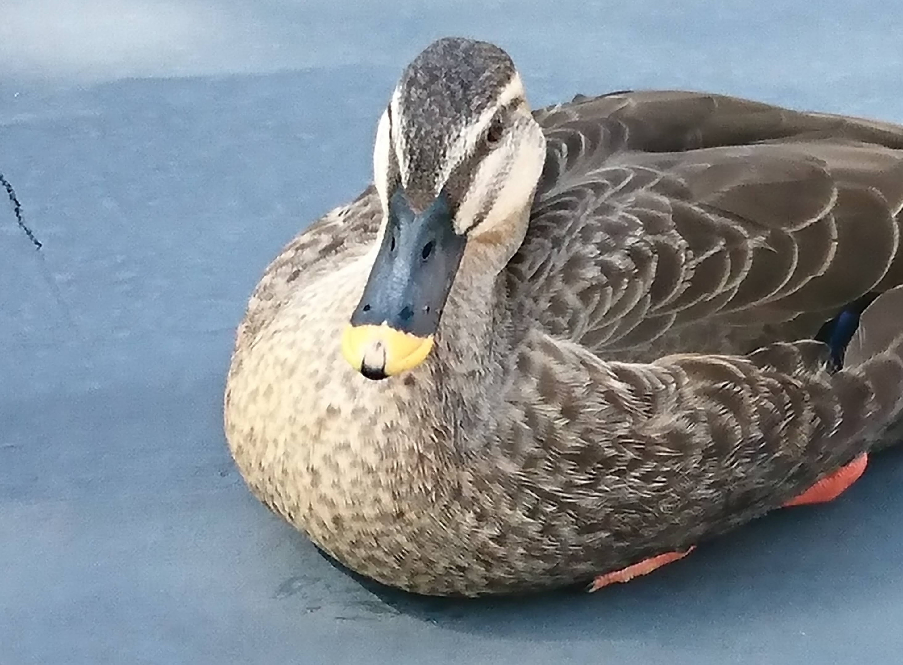
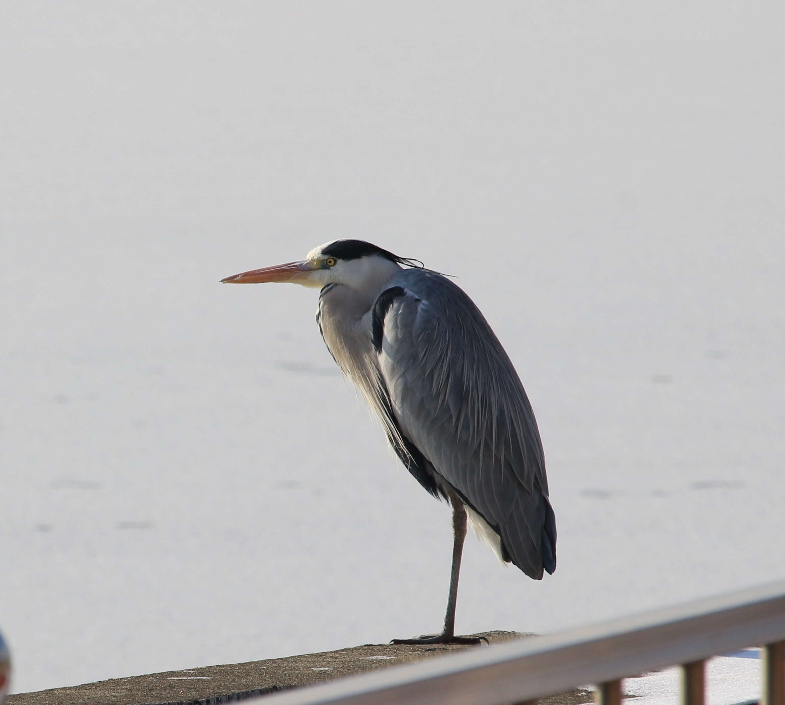
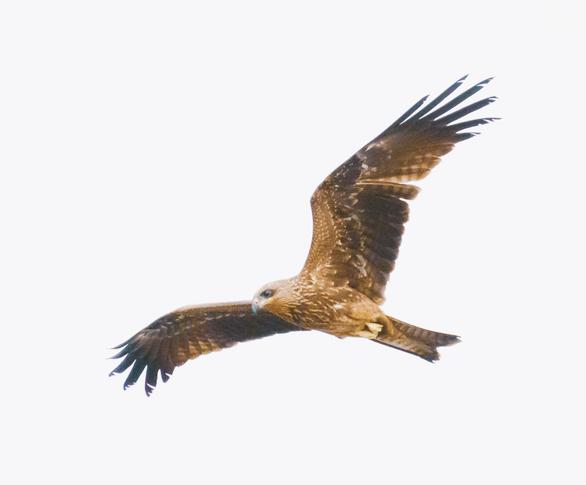

すぐそこに。 いつもの景色が、ちょっと愛おしくなる。

やあ、よく来たね！案内人のすずめんだよ！
野鳥観察って難しそう？
ノンノン、高い双眼鏡も専門知識もいらないよ！
俺たちが、毎日の景色をもっと楽しくするヒントを教えるよ！
ABOUT
「とりみっけ。」へようこそ。
このサイトは、都心のいつもの景色の中で出会える、身近な小鳥たちのやさしい観察ガイドです。
スマホから少しだけ目線を上げて、すぐそばにいる小さな隣人たちの愛らしい姿に、そっと癒されてみませんか？
難しい機材なんていらない！鳥を見たい気持ちと、ちょっとした知識があれば十分だよ！
身近な鳥紹介！

スズメスズメ
歩くとき、両足をそろえて「トコトコ、ぴょんぴょん」と跳ねるように移動するよ（ホッピングといいます）。砂の上で体をすりすりして「砂浴び」をしている姿は、時間を忘れて見入ってしまう可愛さだよ。

カラスカラス
実はとてもお茶目で、公園の滑り台で遊んだり、雨上がりの水たまりで豪快に水浴びをしたりするよ。じっと観察していると、首をかしげてこちらを観察し返してくる知性的な仕草にキュンとするよ。

ヒヨドリヒヨドリ
「ヒーヨ！ヒーヨ！」と賑やかに鳴く、ボサボサの頭髪がトレードマークの鳥だよ。大好物の花の蜜や果実を見つけると、夢中になって顔を花粉で真っ黄色にしながら食事をする、食いしん坊な姿が愛らしいよ。
ムクドリ
オレンジ色のクチバシと足がチャームポイントだよ。芝生の上を黄色い足をいそがしく動かしながら、ミシン目のように地面をツンツンと突っついて虫を探す、一所懸命な後ろ姿に癒されるよ。

セキレイセキレイ
地面をトコトコと早歩きしながら、長めの尾羽を「チチチッ」と上下にゴキゲンに振り続ける習性があるよ。人が歩く先を、まるで案内するかのように少し前をトコトコ逃げては止まる姿がとても健気だよ。

ハトハト
歩くときに首を前後に振っているように見えるけど、実は頭をその場に残しているんだよ。お気に入りの場所で、体をまあるく膨らませてうとうと昼寝をしている姿は、都会の最高の癒やしだよ。

カモカモ
クチバシの先端だけが、まるでマニキュアを塗ったように「ちょこんと黄色い」のがチャームポイントだよ。水面にパカッとお尻を向けながら、一生懸命に潜ってご飯を探す後ろ姿がすごく愛らしいんだ。
見れたらちょっとラッキーな鳥たち！

サギサギ
都会の川沿いや水辺に、突然「真っ白で大きなシルエット」として現れるよ。水の中、片足を小刻みに震わせて魚を驚かす、ダンスのような狩りのポーズが隠れた見どころだよ。

トビトビ
「ピーヒョロロ…」というのどかな鳴き声が聞こえたら見上げるチャンスだよ。大きな翼を広げて、上昇気流に乗りながら円を描くようにゆったりと空を飛ぶのが本当に上手だよ。
モズ
小さな体だけど、キリッとしたカッコいい顔立ちをしているよ。秋になると、木のてっぺんで「キィーキィー！」と高い声で高らかに縄張りを主張する、小さな勇敢さが魅力だよ。
オナガ
水色の長くて綺麗な尾羽と、黒い帽子をかぶったような頭がすごくオシャレな鳥だよ。「ギューイ」という少しハスキーな声で、仲間と賑やかにおしゃべりしながら飛んでいくよ。